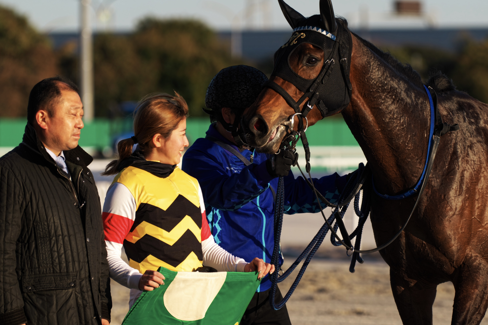
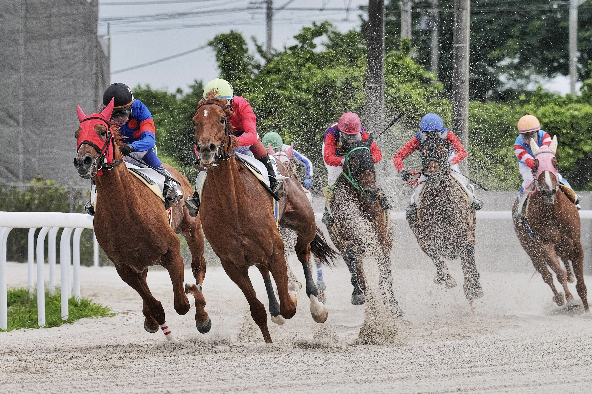
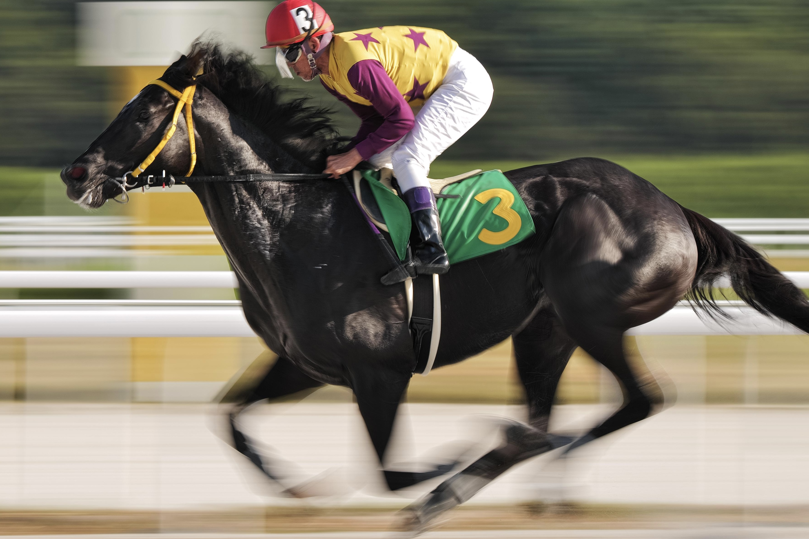
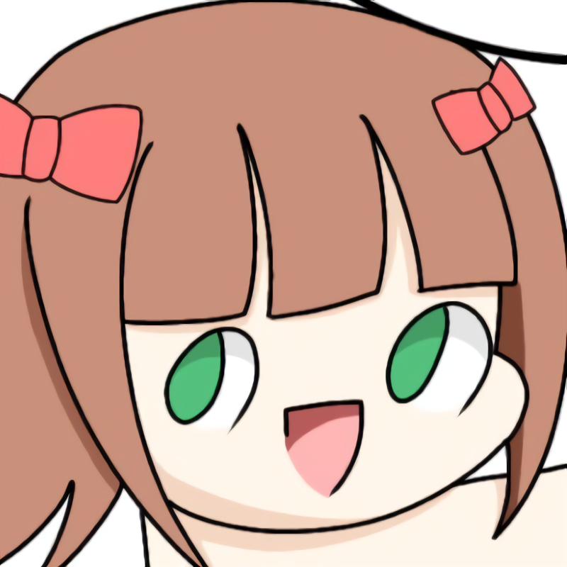

Portfolio
About
Gallery

撮影場所:名古屋競馬場
LUMIX S1 LUMIX S PRO 70-200mm F4
SS 1/1000s F4 ISO100 焦点距離200mm

撮影場所:笠松競馬場
LUMIX S1 LUMIX S PRO 70-200mm F4
SS 1/1600s F5.6 ISO320 焦点距離200mm

撮影場所:名古屋競馬場
LUMIX S1 LUMIX S PRO 70-200mm F4
SS 1/40s F11 ISO50 焦点距離200mm
About
石橋 京悟
イシバシ ケイゴ
2003年生まれ 愛知工業大学情報科学部メディア情報専攻在籍
6歳の頃、父に動物園と騙され名古屋競馬場に連れられ競馬にハマる。
14歳の頃にCanon EOS Kiss X9でカメラを始める。現在はLUMIX S1を使用。
趣味は競馬観戦と野球観戦,カメラ,イラスト作成,一人旅。
愛知工業大学漫画動画研究会所属(部長)&写真研究部所属。

使用可能ソフト
・Photoshop
・Illustrator
・SILKYPIX
・EDIUS
・Maya
・CLIP STUDIO PAINT PRO
・ibis Paint
使用機材
・LUMIX S1
・LUMIX G9 PRO
・LUMIX S PRO 70-200mm F4
・LUMIX S 20-60mm F3.5-5.6
・LUMIX G VALIO 100-300mm F4.0-5.6II